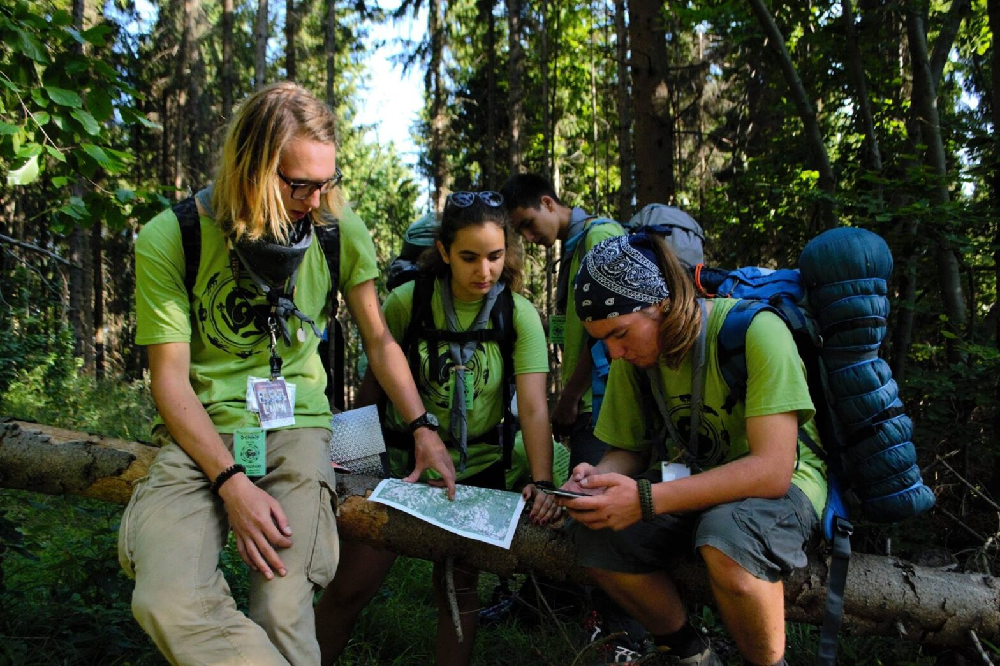

🧭 PiP7 • 2017
Cabana la Pierdut în Pădure VII

Săcărâmb–Mada și înapoi, cu harta și busola: chei cu apă până la piept, orez și mămăligă cu mure, 30 km până la Cheile Glodului, escaladă, hamac din celofan, cerut de pomană la mănăstiri.
„Poți face orice îți propui, if you never stop believing! NEVER STOP!" — Maria
„Nu numărul de foculețe de pe Snapchat te face fericit, ci focul cu prietenii." — Ovidiu